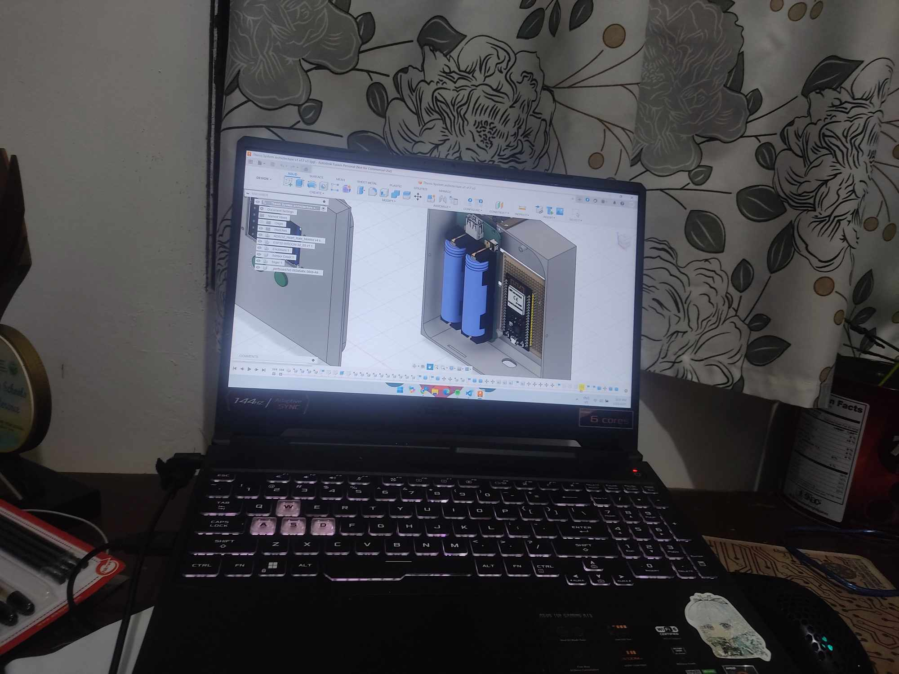
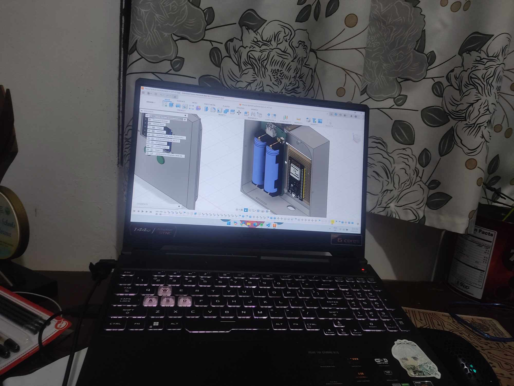

Electro-Oxi Gauge
Development of an IoT-based Portable Tool for Monitoring Heart Health
Project Overview
History
Development Phase
In Progress Development


 

Final Progress


Our Team


Frequently Asked Questions
What is Electro-Oxi Gauge?
It’s an IoT-based portable device designed to monitor heart health in real-time.
How does Electro-Oxi Gauge work?
It uses biosensors to measure heart-related data and transmits it to an online dashboard.
What health parameters does the device track?
It tracks oxygen saturation (SpO2), heart rate, and ECG signals.
Is Electro-Oxi Gauge wearable?
Yes, it is compact and designed to be comfortably worn or carried.
Can it be used by people without medical training?
Absolutely. It’s built with a user-friendly interface for ease of use.
Does it require internet to function?
Yes, for real-time data upload and monitoring via the web dashboard.
What kind of sensors are used in the device?
The device uses pulse oximeters, ECG modules, and microcontrollers like ESP32.
Where is the data stored?
Data is stored in a cloud database that can be accessed via a web interface.
Can I export or download the collected data?
Yes, the system can be configured to allow data exports in formats like CSV.
How is power supplied to the device?
It operates via rechargeable battery or USB power connection.
Who developed the Electro-Oxi Gauge?
It was developed by Computer Engineering students from the University of San Agustin.
Is this a commercial medical device?
No, it’s currently a research prototype intended for academic and experimental purposes.
Can this project be expanded?
Yes, future versions may include features like Bluetooth connectivity and mobile app integration.